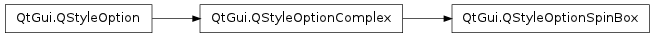

QStyleOptionSpinBox ¶

Detailed Description ¶
The PySide.QtGui.QStyleOptionSpinBox class is used to describe the parameters necessary for drawing a spin box.
PySide.QtGui.QStyleOptionSpinBox contains all the information that PySide.QtGui.QStyle functions need to draw PySide.QtGui.QSpinBox and PySide.QtGui.QDateTimeEdit .
For performance reasons, the access to the member variables is direct (i.e., using the . or -> operator). This low-level feel makes the structures straightforward to use and emphasizes that these are simply parameters used by the style functions.
For an example demonstrating how style options can be used, see the Styles example.
- class PySide.QtGui. QStyleOptionSpinBox ¶
- class PySide.QtGui. QStyleOptionSpinBox ( other )
- class PySide.QtGui. QStyleOptionSpinBox ( version )
-
Parameters: - version – PySide.QtCore.int
- other – PySide.QtGui.QStyleOptionSpinBox
Constructs a PySide.QtGui.QStyleOptionSpinBox , initializing the members variables to their default values.
Constructs a copy of the other style option.
- PySide.QtGui.QStyleOptionSpinBox. StyleOptionVersion ¶
-
This enum is used to hold information about the version of the style option, and is defined for each PySide.QtGui.QStyleOption subclass.
Constant Description QStyleOptionSpinBox.Version 1 The version is used by PySide.QtGui.QStyleOption subclasses to implement extensions without breaking compatibility. If you use qstyleoption_cast() , you normally do not need to check it.
See also
QStyleOptionSpinBox.StyleOptionType
- PySide.QtGui.QStyleOptionSpinBox. StyleOptionType ¶
-
This enum is used to hold information about the type of the style option, and is defined for each PySide.QtGui.QStyleOption subclass.
Constant Description QStyleOptionSpinBox.Type The type of style option provided ( SO_SpinBox for this class). The type is used internally by PySide.QtGui.QStyleOption , its subclasses, and qstyleoption_cast() to determine the type of style option. In general you do not need to worry about this unless you want to create your own PySide.QtGui.QStyleOption subclass and your own styles.
See also
QStyleOptionSpinBox.StyleOptionVersion
- PySide.QtGui.QStyleOptionSpinBox. stepEnabled ¶
- PySide.QtGui.QStyleOptionSpinBox. frame ¶